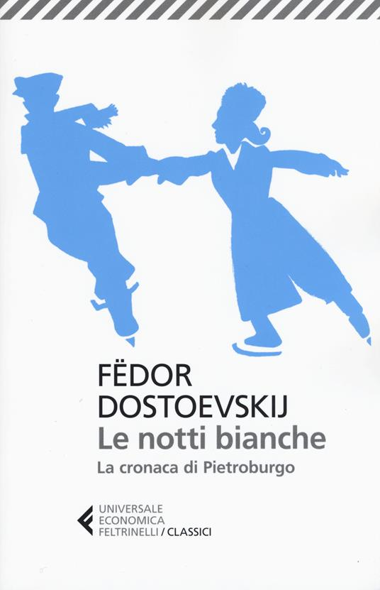

Durante le celebri "notti bianche" di San Pietroburgo, un sognatore solitario, abituato a vagare per la città parlando più con la propria immaginazione che con le persone reali, incontra per caso Nasten'ka, una giovane in attesa di un uomo che le aveva promesso di tornare. Nasce tra loro un legame fatto di confidenze notturne, speranze condivise e un affetto che cresce notte dopo notte — sospeso costantemente tra la possibilità dell'amore e quella della delusione.
Lettura in corso...
Resta connesso per nuovi aggiornamenti.
"E' possibile che esistano uomini cattivi sotto un simile cielo, così bello e festosamente scintillante?"
"Gettai un rapido sguardo sull’incognita. Era bruna, come avevo già intuito, giovane, molto bella. Sulle sue nere ciglia brillavano ancora piccole lacrime. Erano, quelle lacrime, provocate dal recente spavento o da un dolore antico?
Non lo so: ma le sue labbra s’illuminarono già d’un sorriso."
"Credo di sognare… poichè è soltanto in sogno che riesco a parlare con una donna senza provarne sgomento."
"Io non ho affatto l’abitudine di accompagnarmi con donne.
Ho vissuto sempre solo. Così, non so neppure parlar loro…"
"Tuttavia è necessario ch’io ne parli. Ho una gran voglia di dirvi tutto… Il mio cuore ha bisogno di parlare, non posso farlo tacere. Ma, lo credereste? Non ho mai conosciuto una donna che mi abbia voluto bene, non ho avuto mai un amico cui confidare le mie gioie e i miei dolori… E tutti i giorni io sogno d’incontrare qualcuna o qualcuno… Io sogno, sogno, e se voi sapeste quante volte."
"Sognerò di voi tutta la notte, tutte le settimane, tutti i mesi, tutto l’anno… Verrò qui domani, alla stess’ora; sarò felicissimo, intanto, ricordando il nostro incontro, rievocando le vostre parole. Questa piccola piazza mi è già cara."
"Verro anch'io domani, alle dieci, qui. Vedo ormai che non posso più proibirvi di parlarmi… Ma non bisognerà fermarci, qui. E non pensate già che io vi abbiadato un appuntamento! Prevedo che dovrò venir qui per dato un appuntamento! Prevedo che dovrò venir qui per i miei affari, e, ve lo dico francamente, non proverei sorpresa nè mi darebbe fastidio la vostra presenza qui. In breve: io vorrei semplicemente vedervi… per dirvi due parole. "
"In due minuti mi avete reso felice per tutta la vita… Sì: felice! "
"E invano il sognatore fruga nella cenere dei suoi vecchi sogni, cercandovi qualche scintilla da cui risuscitare un nuovo fuoco per scaldarvi il cuore infreddolito, per farvi risorgere tutto ciò che prima era così caro, che commuoveva l’anima, che faceva ribollire il sangue, che strappava lacrime dagli occhi e che ingannava così pomposamente."